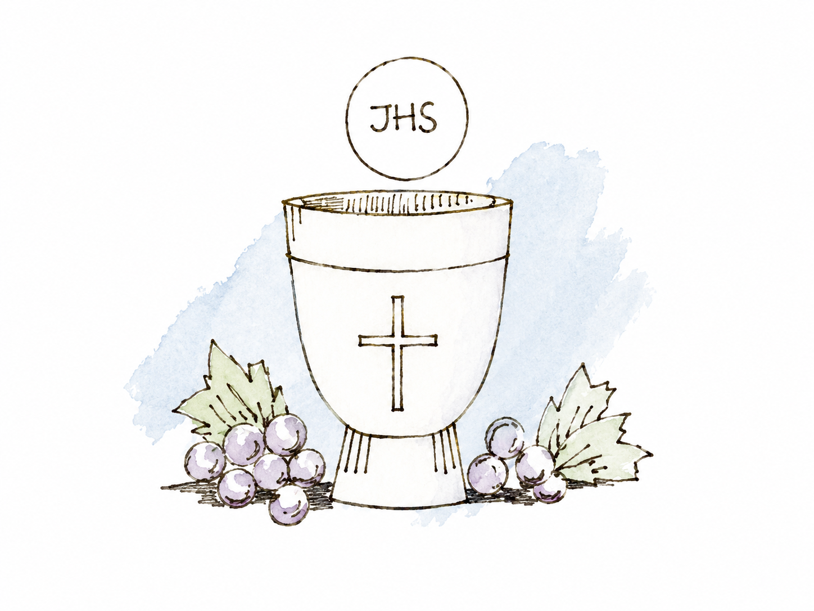

SACRAMENTOS
COMUNIÓN
QUE ES?
La Comunión, también llamada Eucaristía, es el sacramento en el que los fieles reciben a Jesucristo presente en el pan y el vino consagrados durante la Misa.
Para la Iglesia Católica, la Eucaristía es “fuente y culmen de toda la vida cristiana”, porque en ella Cristo se hace presente y se entrega como alimento espiritual para fortalecer la fe y la unión con Dios.
Recibir la Comunión significa participar de manera plena en la celebración eucarística y renovar el vínculo con Jesús y con la comunidad cristiana. No se trata solamente de un gesto religioso, sino de un encuentro profundo con Cristo, que invita a vivir la fe con amor, compromiso y servicio.
QUIENES PUEDEN RECIBIRLO?
Puede recibir la Comunión toda persona bautizada que esté debidamente preparada y en comunión con la Iglesia. En el caso de los niños, la Primera Comunión se recibe luego de un camino de catequesis, en el que aprenden el significado de la Eucaristía, la importancia de la Misa, la oración y la vida cristiana.
La Iglesia dispone que los niños sean preparados adecuadamente antes de recibir por primera vez la Sagrada Comunión, mediante una catequesis conveniente y acompañados por sus familias y la comunidad parroquial.
COMO SE PUEDE EN NUESTRA PARROQUIA?
Consultar en secretaría parroquial para conocer los requisitos, inscripción a catequesis y fechas disponibles.
